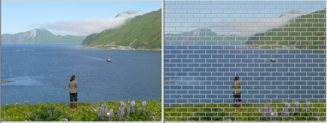

The Bricks effect makes a photo look like it was painted on a brick wall. You can specify the size
of the bricks, and whether to colored "mortar" between the bricks. If you don't choose colored
mortar, the photo will span the space between bricks.
